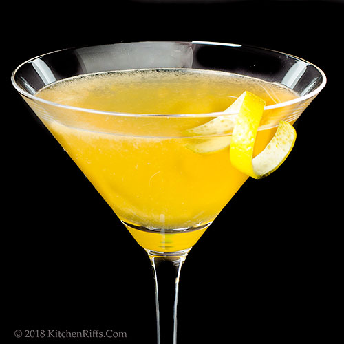

Between the sheets

Description
This cocktail's origins are not set in stone but some say it is a derivative of the sidecar.
Ingredients
- White rum or any light rum
- Cognac
- Triple sec or a different orange liqueur
- Fresh lemon juice
Steps
- Chill a coupe, a Marie antoinette or a Nick & Nora glass
- Add 3/4 oz of lemon juice
- Add 1 oz of triple sec
- Add 1 oz of white rum
- Add 1 oz of cognac
- Fill the shaker with ice and shake for about 8-10 seconds
- Double strain the cocktail onto the chilled glass